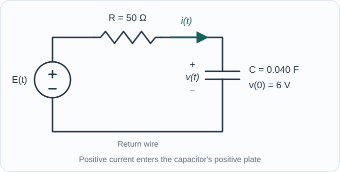

Course practice / Batch 03 / 2026-10-11 PDT
MTH 256
一阶微分方程
First-order differential equations · 非线性验证、方向场、分离变量、积分因子、模型适用区间与分段应用
A logarithmic family and its domain
Consider the first-order differential equation \(y^{\prime}=2t e^{-y}\) and the proposed family \(y_c(t)=\ln(t^2+c)\), where c is a real constant. Use real-valued logarithms.
- Identify the independent and dependent variables. Is the differential equation linear in y? Explain from its form.
- Differentiate \(y_c\) and determine where it satisfies the differential equation.
- Choose c so that \(y(3)=\ln 5\). Give the maximal open interval containing t = 3 on which this member of the family is a real differentiable solution.
- Explain why the algebraic expression inside the logarithm being defined is not enough to guarantee that \(y_c\) is defined.
中文提示（不含解答）
先检查对数真数，再代入初值；一阶不一定代表线性。
Two ways to obtain a horizontal segment
For \(y^{\prime}=(t-1)(y+2)\), sketch short slope segments at all nine grid points with \(t\in\{0,1,2\}\) and \(y\in\{-3,-2,-1\}\). Put t on the horizontal axis and y on the vertical axis.
- Record all nine slopes before sketching.
- Find both straight lines on which the field has horizontal segments. Which, if either, is the graph of a constant solution y(t)? Explain why a vertical line cannot itself be such a graph.
- Describe where the field has positive slopes and where it has negative slopes.
- A solution stays strictly above \(y=-2\) for t just before and just after t = 1. Use the slope signs to decide whether it has a local maximum, a local minimum, or neither at t = 1. Do not solve the equation.
中文提示（不含解答）
分别看两个因子的符号；整列水平线段与恒定解不是同一个概念。
Separate, then choose the inverse-tangent branch
Solve the IVP \(y^{\prime}=\dfrac{1+y^2}{1+t^2}\), \(y(0)=1\), over the real numbers.
- Separate and integrate. Use the initial condition to fix the constant in a relation involving inverse tangents.
- Obtain an explicit expression for y(t), and verify it by substitution.
- Find the maximal open interval containing t = 0. Find y(−1) and describe the forward-endpoint behavior.
- The right-hand side of the differential equation is defined for every real pair (t,y). Explain why this alone does not make this particular solution finite for every real t.
中文提示（不含解答）
反正切有固定值域；取正切之后仍要保留与初值相连的那一支和定义区间。
Can the same initial data allow a delayed start?
Consider \(y^{\prime}=3(\sqrt[3]{y})^2\), \(y(0)=0\), for \(t\ge0\). Here \(\sqrt[3]{y}\) is the real cube root. At t = 0, interpret a derivative as a right-hand derivative.
For each constant \(a\ge0\), define a candidate by \(u_a(t)=0\) when \(0\le t\le a\), and \(u_a(t)=(t-a)^3\) when \(t>a\).
- Check continuity and differentiability at the joining time t = a. Check the differential equation on both sides and at the join.
- Check the initial condition. Compare \(u_0(2)\) and \(u_3(2)\). Do the given equation and initial condition specify exactly one solution?
- On an interval where \(y>0\), separate variables and integrate. Explain why dividing by \((\sqrt[3]{y})^2\) cannot by itself account for time intervals on which y is zero.
- Verify the identically zero function separately. No existence-and-uniqueness theorem is needed for this problem.
中文提示（不含解答）
拼接点必须直接检验导数；除以可能为零的量之前，先单独讨论零的情况。
A logarithm as an integrating factor
On the stated domain \(t>1\), solve \(y^{\prime}+\dfrac{1}{t\ln t}y=\dfrac{2}{t}\), with \(y(e)=3\).
- Find an integrating factor and display the resulting product-derivative equation.
- Find y(t), then verify the equation and initial condition.
- State the maximal interval allowed by the original equation and the initial value. Find the limits as \(t\to1^+\) and \(t\to\infty\).
- Does the solution have a minimum on this interval? If so, find its time and value using the sign of \(y^{\prime}\).
中文提示（不含解答）
计算积分因子时可令 u = ln t；求极值后还要检查两侧导数的符号。
A warm object in a steadily warming chamber
During the first 15 minutes of a chamber experiment, the ambient temperature is \(T_a(t)=18+2t\) °C when t is the numerical time in minutes. An object begins at 28 °C and obeys \(T^{\prime}=-(1/5)(T-T_a(t))\), where \(1/5\) has units min\(^{-1}\). Assume this model only for \(0\le t\le15\).
- Write the linear IVP in standard form and solve for T(t).
- Find the initial rate of temperature change, with units. Explain how the object can initially cool while the chamber is warming.
- Find the time and value of the object's minimum temperature during the stated experiment. Give exact expressions and approximations to two decimals.
- At that minimum, compare the object and ambient temperatures. Find T(15), and explain why an infinite-time prediction is not warranted by the stated 15-minute model.
中文提示（不含解答）
环境温度依赖时间，不能直接套用恒温环境的公式；极值由物体的温度变化率决定。
Growth with a declining per-capita rate
A population P(t) starts at 500 organisms. During the first 20 hours it follows \(P^{\prime}=(0.30-0.020t)P\), with t entered in hours and P measured in organisms. The constant 0.30 has units h\(^{-1}\), and 0.020 has units h\(^{-2}\). Do not assume this fitted model applies after 20 hours.
- Solve the IVP by separation and check that the exponent in your expression is dimensionless.
- Find when the population reaches its maximum on \(0\le t\le20\), and find that maximum to the nearest organism.
- Solve the equation for the population to be twice its initial value. Give the algebraic time candidates to two decimals, and state which are valid times for this model.
- Find P(20), to the nearest organism. Has the population returned to its initial size by then? Use your formula rather than an extrapolation beyond the stated interval.
中文提示（不含解答）
积分后的增长率不再是常数乘时间；得到多个时间根后，逐个检查模型适用范围。
Calibrate a logistic model from two counts
A culture is modeled continuously by \(P^{\prime}=rP(1-P/1600)\), where t is in days, P is measured in organisms, and \(r>0\). The counts are \(P(0)=200\) and \(P(4)=400\).
- Solve for P(t) by separation, then determine r exactly and numerically, with units.
- Find the nonnegative equilibrium populations and classify each using the sign of the right-hand side.
- Find when the culture reaches 800 organisms. Explain why the growth rate \(P^{\prime}\), viewed as a function of P, is greatest at that population.
- Find the first time the culture reaches 1200 organisms, to two decimal places. Does the model reach its positive equilibrium at a finite time? Justify from your expression.
中文提示（不含解答）
先保留未知参数求通解，再代入第二次计数；人口最多与增长率最大是不同问题。
An expanding tank with a change of inflow
A tank has a capacity of 120 L and initially contains 60 L of liquid with 4.8 kg of dissolved salt. Liquid enters at 4 L/min and perfectly mixed liquid leaves at 2 L/min. For \(0\le t<10\) minutes, the entering concentration is 0.05 kg/L. At t = 10, the entering stream changes instantly to pure water, with the same flow rate. Assume no other losses, no instantaneous change of tank volume or salt mass at the switch, and stop the model when the liquid first reaches capacity.
- Find the volume V(t), the stopping time, and the physical time interval. Set up the piecewise IVP for salt mass S(t), in kg.
- Solve for S(t) and the concentration \(C(t)=S(t)/V(t)\) in both stages. Show how the values at the switching time connect the stages.
- Find the first time C(t) reaches 0.04 kg/L. Give an exact expression and a value to two decimals, and check that the time occurs before the tank reaches capacity.
- Find the maximum salt mass during the experiment and when it occurs. Compare the one-sided rates \(S^{\prime}(10^-)\) and \(S^{\prime}(10^+)\), including units.
- Find the concentration at the stopping time. Explain why a formula obtained by continuing the same volume law beyond that time is not justified for this tank.
中文提示（不含解答）
两阶段体积规律相同，但入口盐率改变；交接时质量连续，导数可以跳变。
A precharged capacitor and a ramped source
An ideal voltage source, a 50 Ω resistor, and a 0.040 F capacitor form one series loop. Let v(t) be the capacitor voltage, in volts, and let current i(t) be positive into the capacitor's positive plate. The source polarity is chosen so that \(Ri+v=E(t)\), and the ideal source permits current in either direction. The capacitor is initially at 6 V. With t in seconds, the source is \(E(t)=6t\) V for \(0\le t\le3\) and \(E(t)=18\) V for \(t\ge3\); the ramp rate is 6 V/s. Assume the capacitor voltage cannot jump.
- Write the IVP for v and solve it in both time intervals. Match the capacitor voltage at t = 3.
- Find the time constant and the initial current \(i(0^+)\), with units. Explain the physical meaning of the sign of this current.
- Find the first time the current is zero and show that the capacitor charge is then at its minimum. Give that time and the minimum charge, using three decimal places.
- Compute \(i(3^-)\) and \(i(3^+)\). Does the current jump when the source changes from a ramp to a constant value? Explain using the circuit equation.
- Find the first time the capacitor reaches 15 V, to two decimals, and its limiting charge as \(t\to\infty\).

中文提示（不含解答）
初始电容电压不为零，电流也可能为负；第二阶段以切换时的电压作为初值。